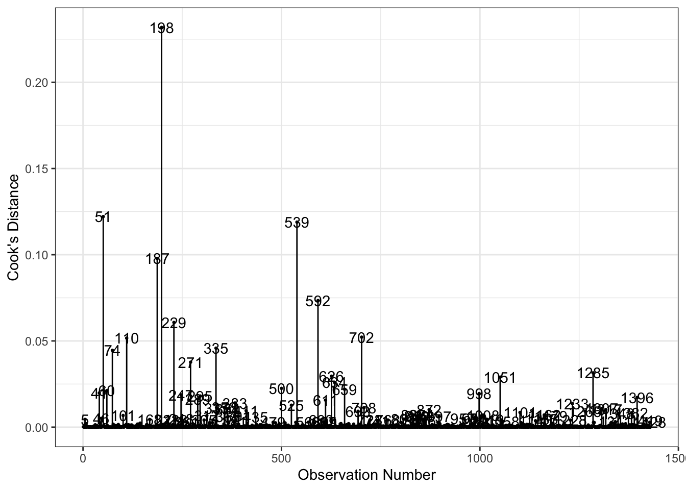
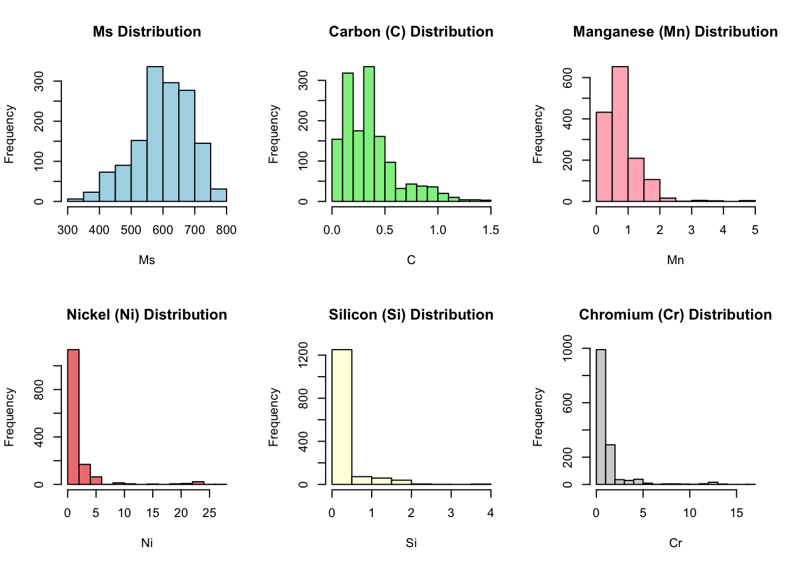

C Mn Si Cr Ni Mo V Co Al W Cu Nb Ti B N Ms
1 0.19 1.25 0.23 0.07 0.66 0.54 0.00 0 0.00 0 0.00 0 0 0 0.000 645.00
2 1.00 0.45 0.00 1.52 3.33 0.00 0.00 0 0.00 0 0.00 0 0 0 0.000 359.00
3 0.26 0.58 0.49 1.65 0.18 0.84 0.38 0 0.00 0 0.07 0 0 0 0.000 653.00
4 0.06 1.96 0.32 0.00 0.00 0.18 0.22 0 0.02 0 0.00 0 0 0 0.005 721.00
5 1.20 1.88 0.00 0.00 0.00 0.00 0.00 0 0.00 0 0.00 0 0 0 0.000 323.00
6 0.38 0.69 0.20 0.95 1.58 0.26 0.00 0 0.00 0 0.00 0 0 0 0.000 589.75Martensite Starting Temperature-Data Visualization & Data Exploration
Introduction to the Dataset (Martensite Starting Temperature)
This dataset contains the chemical compositions of various steels along with their Martensite starting temperatures (Ms), aiming to develop a model that predicts Ms based on steel chemistry.
Martensite is a phase where steel becomes extremely strong and can withstand high stresses, making it essential for industries like automotive to enhance crash safety. Ms is the critical temperature where steel’s internal structure changes into Martensite, and it varies with chemical composition. Currently, determining Ms requires lengthy tests using Thermogravimetry (TGA), which are prone to errors and often need repeating. A predictive model would save significant time and effort by eliminating the need for these tests.
The head of the dataset
C, Mn, Si, Cr, and etc. are referred to chemical elements based on the Periodic Table. They are Carbon, Manganese, Silicon, Chromium, and so on.
Checking for missing values
[1] 0There are no missing values.
Checking the Structure of the Dataset
'data.frame': 1543 obs. of 16 variables:
$ C : num 0.19 1 0.26 0.06 1.2 0.38 0.43 0.004 0 2 ...
$ Mn: num 1.25 0.45 0.58 1.96 1.88 0.69 0.83 0.03 0 0.65 ...
$ Si: num 0.23 0 0.49 0.32 0 0.2 1.55 0.075 0 0.3 ...
$ Cr: num 0.07 1.52 1.65 0 0 ...
$ Ni: num 0.66 3.33 0.18 0 0 ...
$ Mo: num 0.54 0 0.84 0.18 0 0.26 0.4 0 0 0.5 ...
$ V : num 0 0 0.38 0.22 0 ...
$ Co: num 0 0 0 0 0 0 0 0 0 0 ...
$ Al: num 0 0 0 0.02 0 0 0 0 0 0.051 ...
$ W : num 0 0 0 0 0 0 0 0 0 0 ...
$ Cu: num 0 0 0.07 0 0 0 0 0 0 0.08 ...
$ Nb: num 0 0 0 0 0 0 0 0 0 0 ...
$ Ti: num 0 0 0 0 0 0 0 0 0 0 ...
$ B : num 0 0 0 0 0 0 0 0 0 0 ...
$ N : num 0 0 0 0.005 0 0 0 0.002 0 0 ...
$ Ms: num 645 359 653 721 323 ...The dataset has 1543 observations and 16 variables. Ms represent Martensite starting temperature and is the dependent variable.
The variables have continuous numeric content.
Summary statistics of the dataset
Ms is ranged between 150 to 800 degree Celsius. However, the most of the data are in 350 to 800 degree Celsius. The model may be designed for a limited range of temperature where we have more data (350 to 800C).
Carbon (C) has some zero contents which does not make any sense. Steel means Iron + Carbon. Iron without Carbon is not steel. C rows with zero content should be removed.
Scatter plot for one element and Martensite starting temperature

Carbon rows with zero content are recognized.
Histogram of Martensite starting temperature

Filtering the dataset for temperatures between 300 to 800 degree Celsius
Building GLM models
- Previous knowledge in Materials Science has been utilized to select important predictors. I am not sure if this is a correct approach.
Call:
glm(formula = Ms ~ C + Ni + Mn + Mo + Si + Cr + V + Co, family = gaussian,
data = filtered_dataset)
Coefficients:
Estimate Std. Error t value Pr(>|t|)
(Intercept) 750.6469 3.1633 237.300 < 2e-16 ***
C -260.1772 4.4241 -58.809 < 2e-16 ***
Ni -12.4065 0.2859 -43.394 < 2e-16 ***
Mn -25.5874 1.9657 -13.017 < 2e-16 ***
Mo -7.7315 2.0623 -3.749 0.000184 ***
Si -15.6230 2.9154 -5.359 9.69e-08 ***
Cr -7.1898 0.5425 -13.254 < 2e-16 ***
V 8.3285 3.5131 2.371 0.017881 *
Co 2.0491 0.9144 2.241 0.025184 *
---
Signif. codes: 0 '***' 0.001 '**' 0.01 '*' 0.05 '.' 0.1 ' ' 1
(Dispersion parameter for gaussian family taken to be 1997.601)
Null deviance: 12075332 on 1502 degrees of freedom
Residual deviance: 2984416 on 1494 degrees of freedom
AIC: 15699
Number of Fisher Scoring iterations: 2At the first glance, V and Co present weak predictors. These two have to be removed.
Checking residuals


Q-Q plot shows deviations for extreme values.
Residual Distribution is skewed.
Identifying Outliers
C Mn Si Cr Ni Mo V Co Al W Cu Nb
9 0.000 0.00 0.00000 0.53096 30.96549 0.00000 0.000 0.00 0.000 0.0 0.00 0
48 0.280 0.39 0.16000 2.35000 0.06000 0.06000 0.530 0.00 0.000 4.1 0.00 0
97 0.000 0.00 0.00000 0.00000 30.77361 1.36279 0.000 0.00 0.000 0.0 0.00 0
193 0.500 0.35 1.00000 0.11000 0.19000 0.50000 0.000 0.00 0.000 0.0 0.00 0
209 0.300 0.48 2.20000 10.50000 0.12000 1.00000 0.012 0.00 0.000 0.0 0.07 0
220 0.300 1.55 0.20000 0.00000 0.00000 0.28000 0.000 0.00 0.000 0.0 0.00 0
302 0.110 0.50 0.22000 0.00000 0.00000 0.56000 0.000 0.00 0.003 0.0 0.00 0
328 0.160 0.60 0.25000 0.20000 1.50000 0.05000 0.000 0.00 0.000 0.0 0.00 0
331 0.000 0.00 1.92824 0.00000 31.53985 0.00000 0.000 0.00 0.000 0.0 0.00 0
334 0.550 0.75 1.50000 0.70000 0.00000 0.00000 0.000 0.00 0.000 0.0 0.00 0
365 1.040 0.33 0.26000 1.53000 0.31000 0.01000 0.010 0.00 0.000 0.0 0.20 0
387 0.330 1.12 0.30000 0.11000 0.24000 0.04000 0.000 0.00 0.010 0.0 0.19 0
389 0.190 1.17 0.41000 0.06000 0.00000 0.00000 0.000 0.00 0.000 0.0 0.00 0
403 0.400 1.38 1.50000 0.00000 0.00000 0.80000 0.000 0.00 0.000 0.0 0.00 0
441 0.190 0.46 0.34000 7.83000 0.09000 2.02000 0.010 0.00 0.005 0.0 0.00 0
500 0.260 0.76 0.32000 1.08000 0.72000 1.25000 0.310 0.00 0.000 0.0 0.00 0
555 0.200 1.88 0.00000 0.00000 0.00000 0.00000 0.000 0.00 0.000 0.0 0.00 0
573 0.380 0.82 1.48000 0.72000 0.00000 0.77000 0.000 0.00 0.000 0.0 0.00 0
624 0.440 0.75 0.26000 1.70000 0.17000 0.08000 0.090 0.00 0.000 0.0 0.18 0
629 0.430 0.95 1.38000 1.06000 0.03000 0.10000 0.035 0.00 0.000 0.0 0.05 0
643 0.380 1.45 0.36000 0.00000 0.00000 0.76000 0.000 0.00 0.000 0.0 0.00 0
691 0.100 0.47 0.28000 1.32000 2.34000 0.00000 0.000 0.00 0.000 0.0 0.87 0
701 0.110 0.00 0.00000 0.00000 3.49000 0.00000 0.000 0.00 0.000 0.0 0.00 0
702 0.470 0.82 0.35000 1.20000 0.04000 0.00000 0.110 0.00 0.000 0.0 0.14 0
710 0.150 0.36 0.44000 2.24000 0.09000 0.85000 0.000 0.00 0.097 0.0 0.23 0
821 0.220 0.83 0.24000 0.54000 1.06000 0.51000 0.000 0.00 0.029 0.0 0.30 0
847 0.190 1.00 0.04000 0.62000 0.02000 0.00000 0.000 0.00 0.000 0.0 0.00 0
877 0.360 0.78 0.31000 0.00000 0.73000 0.49000 0.000 0.00 0.000 0.0 0.00 0
882 0.300 0.70 0.20000 0.00000 0.00000 0.00000 0.000 0.00 0.000 0.0 0.00 0
895 0.004 0.03 0.07500 0.00000 29.55000 0.00000 0.000 0.00 0.000 0.0 0.00 0
967 0.430 0.83 1.55000 0.91000 3.02000 0.40000 0.120 0.00 0.000 0.0 0.00 0
1035 0.400 1.47 0.37000 0.00000 0.00000 0.26000 0.000 0.00 0.000 0.0 0.00 0
1069 0.170 0.49 0.29000 0.18000 5.07000 0.24000 0.000 0.00 0.000 0.0 0.10 0
1091 0.330 0.74 0.23000 0.07000 3.47000 0.00000 0.000 0.00 0.000 0.0 0.00 0
1112 0.390 0.70 0.20000 1.05000 0.00000 0.00000 0.000 0.00 0.000 0.0 0.00 0
1144 0.120 0.46 0.35000 4.79000 0.20000 0.54000 0.000 0.00 0.000 0.0 0.00 0
1148 0.400 0.80 0.33000 0.00000 0.00000 0.79000 0.000 0.00 0.000 0.0 0.00 0
1166 0.400 0.75 0.27000 0.96000 0.13000 0.07000 0.060 0.00 0.000 0.0 0.20 0
1223 0.540 0.46 0.00000 0.00000 0.00000 0.00000 0.000 0.00 0.000 0.0 0.00 0
1225 0.470 0.40 1.06000 0.00000 0.00000 0.00000 0.000 0.00 0.000 0.0 0.00 0
1226 0.910 0.65 0.23000 0.60000 1.35000 0.00000 0.000 0.00 0.000 0.0 0.03 0
1242 0.870 1.78 0.29000 0.20000 0.15000 0.03000 0.000 0.00 0.000 0.0 0.00 0
1291 0.390 1.67 0.00000 0.00000 0.10000 0.00000 0.000 0.00 0.000 0.0 0.00 0
1302 0.360 1.50 0.20000 0.00000 0.00000 0.00000 0.000 0.00 0.000 0.0 0.00 0
1346 0.430 1.57 0.23000 0.12000 0.20000 0.07000 0.000 0.00 0.000 0.0 0.00 0
1398 0.300 0.40 0.30000 0.86000 3.20000 0.40000 0.000 0.00 0.000 0.0 0.00 0
1436 0.550 0.65 0.20000 0.00000 0.65000 0.00000 0.000 0.00 0.000 0.0 0.00 0
1492 0.760 0.25 0.35000 4.54000 0.00000 5.75000 2.050 0.86 0.000 6.6 0.00 0
Ti B N Ms
9 0.000 0 0.000 218.1500
48 0.000 0 0.000 673.0000
97 0.000 0 0.000 199.1500
193 0.000 0 0.000 573.0000
209 0.000 0 0.000 528.0000
220 0.000 0 0.000 628.0000
302 0.000 0 0.002 775.0000
328 0.000 0 0.000 647.0000
331 0.000 0 0.000 171.1500
334 0.000 0 0.000 551.0000
365 0.000 0 0.000 518.0000
387 0.000 0 0.000 628.0000
389 0.000 0 0.000 700.0000
403 0.000 0 0.000 591.0000
441 0.000 0 0.013 623.0000
500 0.000 0 0.000 634.0000
555 0.000 0 0.000 666.0000
573 0.000 0 0.000 607.0000
624 0.000 0 0.000 573.0000
629 0.000 0 0.000 570.0000
643 0.000 0 0.000 601.0000
691 0.046 0 0.000 673.0000
701 0.000 0 0.000 722.0000
702 0.000 0 0.000 571.5000
710 0.010 0 0.000 698.0000
821 0.000 0 0.000 673.0000
847 0.000 0 0.000 705.0000
877 0.000 0 0.000 636.0000
882 0.000 0 0.000 666.0000
895 0.000 0 0.002 249.8167
967 0.000 0 0.000 568.0000
1035 0.000 0 0.000 596.0000
1069 0.000 0 0.000 641.0000
1091 0.000 0 0.000 583.0000
1112 0.000 0 0.000 606.0000
1144 0.000 0 0.000 736.0000
1148 0.000 0 0.000 603.0000
1166 0.035 0 0.010 634.0000
1223 0.000 0 0.000 596.0000
1225 0.000 0 0.000 594.2611
1226 0.000 0 0.000 422.0000
1242 0.000 0 0.000 422.0000
1291 0.000 0 0.000 618.0000
1302 0.000 0 0.000 603.0000
1346 0.000 0 0.000 572.0000
1398 0.000 0 0.000 598.0000
1436 0.000 0 0.000 548.0000
1492 0.000 0 0.000 473.0000Remove rows where Carbon content is zero, update the model, and the summary of the model.
- The model has been updated after removing zero cells for Carbon content.
Call:
glm(formula = Ms ~ C + Ni + Mn + Mo + Si + Cr + V + Co, family = gaussian,
data = filtered_dataset_no_C0)
Coefficients:
Estimate Std. Error t value Pr(>|t|)
(Intercept) 759.1787 3.0472 249.140 < 2e-16 ***
C -266.4946 4.1713 -63.887 < 2e-16 ***
Ni -14.0982 0.3195 -44.121 < 2e-16 ***
Mn -29.0478 1.8747 -15.494 < 2e-16 ***
Mo -8.0919 2.0278 -3.991 6.92e-05 ***
Si -16.6972 2.7500 -6.072 1.61e-09 ***
Cr -7.5038 0.5069 -14.804 < 2e-16 ***
V 8.3673 3.4113 2.453 0.01429 *
Co 2.3044 0.8627 2.671 0.00764 **
---
Signif. codes: 0 '***' 0.001 '**' 0.01 '*' 0.05 '.' 0.1 ' ' 1
(Dispersion parameter for gaussian family taken to be 1730.735)
Null deviance: 11796080 on 1456 degrees of freedom
Residual deviance: 2506104 on 1448 degrees of freedom
AIC: 15010
Number of Fisher Scoring iterations: 2Updating the model by removing Mo and Co and adding an interaction parameter between Carbon and Manganese.
- The model has been updated after removing weak predictors.
Call:
glm(formula = Ms ~ C * Mn + Ni + Si + Cr + V, family = gaussian,
data = filtered_dataset_no_C0)
Coefficients:
Estimate Std. Error t value Pr(>|t|)
(Intercept) 749.7319 3.1524 237.829 < 2e-16 ***
C -240.0692 5.6937 -42.164 < 2e-16 ***
Mn -18.6538 2.3738 -7.858 7.54e-15 ***
Ni -13.7303 0.3167 -43.358 < 2e-16 ***
Si -13.2855 2.7810 -4.777 1.96e-06 ***
Cr -8.3034 0.5069 -16.382 < 2e-16 ***
V 1.1567 3.1278 0.370 0.712
C:Mn -39.6809 6.0769 -6.530 9.09e-11 ***
---
Signif. codes: 0 '***' 0.001 '**' 0.01 '*' 0.05 '.' 0.1 ' ' 1
(Dispersion parameter for gaussian family taken to be 1701.745)
Null deviance: 11796080 on 1456 degrees of freedom
Residual deviance: 2465829 on 1449 degrees of freedom
AIC: 14984
Number of Fisher Scoring iterations: 2Update the model by removing V and add an interaction parameter between Carbon and Nickel.
- Further revision in the model by removing a weak parameter and adding a new interaction parameter
Call:
glm(formula = Ms ~ C * Mn + C * Ni + Si + Cr, family = gaussian,
data = filtered_dataset_no_C0)
Coefficients:
Estimate Std. Error t value Pr(>|t|)
(Intercept) 751.5794 3.0913 243.129 < 2e-16 ***
C -231.2782 5.4214 -42.660 < 2e-16 ***
Mn -19.0683 2.3316 -8.178 6.23e-16 ***
Ni -13.0691 0.3241 -40.326 < 2e-16 ***
Si -15.1211 2.7398 -5.519 4.03e-08 ***
Cr -8.5661 0.4913 -17.436 < 2e-16 ***
C:Mn -41.8580 5.8686 -7.133 1.55e-12 ***
C:Ni -13.8302 1.9610 -7.053 2.71e-12 ***
---
Signif. codes: 0 '***' 0.001 '**' 0.01 '*' 0.05 '.' 0.1 ' ' 1
(Dispersion parameter for gaussian family taken to be 1645.423)
Null deviance: 11796080 on 1456 degrees of freedom
Residual deviance: 2384218 on 1449 degrees of freedom
AIC: 14935
Number of Fisher Scoring iterations: 2Log Model
After reviewing Q-Q plot and its deviations in extreme values and a skewed residual distribution, a log model has been considered. It will be compared with the first model at the end.
Call:
glm(formula = log(Ms) ~ C * Mn + C * Ni + Si + Cr, family = gaussian,
data = filtered_dataset_no_C0)
Coefficients:
Estimate Std. Error t value Pr(>|t|)
(Intercept) 6.6617940 0.0053830 1237.558 < 2e-16 ***
C -0.4182892 0.0094406 -44.307 < 2e-16 ***
Mn -0.0407894 0.0040602 -10.046 < 2e-16 ***
Ni -0.0240965 0.0005644 -42.697 < 2e-16 ***
Si -0.0245566 0.0047709 -5.147 3.01e-07 ***
Cr -0.0152132 0.0008555 -17.783 < 2e-16 ***
C:Mn -0.0698957 0.0102193 -6.840 1.17e-11 ***
C:Ni -0.0248897 0.0034148 -7.289 5.12e-13 ***
---
Signif. codes: 0 '***' 0.001 '**' 0.01 '*' 0.05 '.' 0.1 ' ' 1
(Dispersion parameter for gaussian family taken to be 0.004989449)
Null deviance: 37.6380 on 1456 degrees of freedom
Residual deviance: 7.2297 on 1449 degrees of freedom
AIC: -3578
Number of Fisher Scoring iterations: 2Performing ANOVA for the updated model.
Loading required package: ggpubr
Performing ANOVA for the Log Model
Checking leverage and influential points for both models
Investigate the Influential Points
C Mn Si Cr Ni Mo V Co Al W Cu Nb Ti B N Ms
1145 0.022 10.24 0.00 8.19 0.00 0.00 0.00 0 0 0 0.00 0 0 0 0.206 327.15
718 2.250 0.00 0.00 11.50 0.00 0.80 0.20 0 0 0 0.00 0 0 0 0.000 422.00
719 2.080 0.39 0.28 11.48 0.31 0.02 0.04 0 0 0 0.15 0 0 0 0.000 457.00By reviewing Carbon and Chromium contents, it can be decided that these three points are not representing routine chemistry for steels. They are unusual, and they can be removed.
Remove Influential Points and Updating Models
Call:
glm(formula = Ms ~ C * Mn + C * Ni + Si + Cr, family = gaussian,
data = filtered_dataset_no_influential)
Coefficients:
Estimate Std. Error t value Pr(>|t|)
(Intercept) 753.7295 3.2150 234.445 < 2e-16 ***
C -242.2463 5.5389 -43.735 < 2e-16 ***
Mn -16.9666 2.6015 -6.522 9.58e-11 ***
Ni -13.2149 0.3142 -42.053 < 2e-16 ***
Si -15.0063 2.5997 -5.772 9.55e-09 ***
Cr -9.1535 0.4711 -19.429 < 2e-16 ***
C:Mn -40.5155 5.9696 -6.787 1.67e-11 ***
C:Ni -12.4910 1.8647 -6.699 3.01e-11 ***
---
Signif. codes: 0 '***' 0.001 '**' 0.01 '*' 0.05 '.' 0.1 ' ' 1
(Dispersion parameter for gaussian family taken to be 1481.353)
Null deviance: 11670630 on 1453 degrees of freedom
Residual deviance: 2142037 on 1446 degrees of freedom
AIC: 14751
Number of Fisher Scoring iterations: 2
Call:
glm(formula = log(Ms) ~ C * Mn + C * Ni + Si + Cr, family = gaussian,
data = filtered_dataset_no_influential)
Coefficients:
Estimate Std. Error t value Pr(>|t|)
(Intercept) 6.6636794 0.0055789 1194.433 < 2e-16 ***
C -0.4350978 0.0096117 -45.267 < 2e-16 ***
Mn -0.0349821 0.0045145 -7.749 1.74e-14 ***
Ni -0.0242615 0.0005453 -44.491 < 2e-16 ***
Si -0.0243802 0.0045113 -5.404 7.60e-08 ***
Cr -0.0161918 0.0008175 -19.806 < 2e-16 ***
C:Mn -0.0707458 0.0103590 -6.829 1.25e-11 ***
C:Ni -0.0225066 0.0032359 -6.955 5.31e-12 ***
---
Signif. codes: 0 '***' 0.001 '**' 0.01 '*' 0.05 '.' 0.1 ' ' 1
(Dispersion parameter for gaussian family taken to be 0.004460798)
Null deviance: 37.1057 on 1453 degrees of freedom
Residual deviance: 6.4503 on 1446 degrees of freedom
AIC: -3733.4
Number of Fisher Scoring iterations: 2Investigate Points Found Out by Cook’s Distances
C Mn Si Cr Ni Mo V Co Al W Cu Nb Ti B N Ms
1199 1.36 1.84 1.14 0.15 1.81 1.41 0.00 0 0 0.00 0.00 0 0 0 0 439
1259 2.08 0.39 0.28 11.48 0.31 0.02 0.04 0 0 0.00 0.15 0 0 0 0 361
1122 1.56 0.37 0.20 12.46 0.26 0.54 0.65 0 0 0.28 0.10 0 0 0 0 458These observation are valid and will be kept in the dataset.
Apply the Residuals Check to the Filtered Dataset
Counting Outliers
outlier n
1 Not Suspected 1429
2 Suspected 25Plotting Carbon Content with Martensite Starting Temperature

Performing ANOVA for Both Models After Removing Influential Points

Check Multicollinearity
First Model
C Mn Ni Si Cr C:Mn C:Ni
2.392626 2.309298 1.417059 1.067519 1.073750 2.869351 1.194094 Log Model
C Mn Ni Si Cr C:Mn C:Ni
2.392626 2.309298 1.417059 1.067519 1.073750 2.869351 1.194094 There is no concerning level of multicollinearity for both models.
Remove Identified Outliers and Revise Both Models
Call:
glm(formula = Ms ~ C * Mn + C * Ni + Si + Cr, family = gaussian,
data = filtered_dataset_no_influential_no_outlier)
Coefficients:
Estimate Std. Error t value Pr(>|t|)
(Intercept) 769.4121 2.6216 293.489 < 2e-16 ***
C -286.7145 4.5296 -63.299 < 2e-16 ***
Mn -16.4197 2.1971 -7.473 1.36e-13 ***
Ni -14.0369 0.2361 -59.454 < 2e-16 ***
Si -13.8905 1.8663 -7.443 1.70e-13 ***
Cr -10.1289 0.3825 -26.478 < 2e-16 ***
C:Mn -41.4509 4.7323 -8.759 < 2e-16 ***
C:Ni -8.3589 1.3578 -6.156 9.68e-10 ***
---
Signif. codes: 0 '***' 0.001 '**' 0.01 '*' 0.05 '.' 0.1 ' ' 1
(Dispersion parameter for gaussian family taken to be 760.2129)
Null deviance: 10969684 on 1428 degrees of freedom
Residual deviance: 1080263 on 1421 degrees of freedom
AIC: 13545
Number of Fisher Scoring iterations: 2Performing ANOVA for the First Model After Removing Outliers

Checking Cook’s Distance After Removing Outliers

Log Model After Removing Outliers
Call:
glm(formula = log(Ms) ~ C * Mn + C * Ni + Si + Cr, family = gaussian,
data = filtered_dataset_no_influential_no_outlier)
Coefficients:
Estimate Std. Error t value Pr(>|t|)
(Intercept) 6.6889963 0.0043407 1540.990 < 2e-16 ***
C -0.5102408 0.0074998 -68.034 < 2e-16 ***
Mn -0.0319981 0.0036379 -8.796 < 2e-16 ***
Ni -0.0255305 0.0003909 -65.309 < 2e-16 ***
Si -0.0225859 0.0030902 -7.309 4.48e-13 ***
Cr -0.0175028 0.0006334 -27.633 < 2e-16 ***
C:Mn -0.0751043 0.0078355 -9.585 < 2e-16 ***
C:Ni -0.0154270 0.0022482 -6.862 1.01e-11 ***
---
Signif. codes: 0 '***' 0.001 '**' 0.01 '*' 0.05 '.' 0.1 ' ' 1
(Dispersion parameter for gaussian family taken to be 0.002084123)
Null deviance: 34.4909 on 1428 degrees of freedom
Residual deviance: 2.9615 on 1421 degrees of freedom
AIC: -4756.5
Number of Fisher Scoring iterations: 2Performing ANOVA for The Log Model After Removing Outliers
Checking Cook’s Distance
Table 1
| Ms | C | Mn | Ni | Si | Cr | |
|---|---|---|---|---|---|---|
| Min. :310.0 | Min. :0.0016 | Min. :0.0000 | Min. : 0.000 | Min. :0.0000 | Min. : 0.000 | |
| 1st Qu.:553.5 | 1st Qu.:0.1600 | 1st Qu.:0.4700 | 1st Qu.: 0.000 | 1st Qu.:0.2000 | 1st Qu.: 0.000 | |
| Median :605.0 | Median :0.3300 | Median :0.6900 | Median : 0.150 | Median :0.2600 | Median : 0.520 | |
| Mean :601.8 | Mean :0.3617 | Mean :0.7917 | Mean : 1.558 | Mean :0.3475 | Mean : 1.043 | |
| 3rd Qu.:670.0 | 3rd Qu.:0.4400 | 3rd Qu.:0.9700 | 3rd Qu.: 1.580 | 3rd Qu.:0.3400 | 3rd Qu.: 1.150 | |
| Max. :784.0 | Max. :1.4600 | Max. :4.9500 | Max. :27.200 | Max. :3.8000 | Max. :16.200 |
Updated Summary for the Revised Dataset
Ms C Mn Ni
Min. :310.0 Min. :0.0016 Min. :0.0000 Min. : 0.000
1st Qu.:553.5 1st Qu.:0.1600 1st Qu.:0.4700 1st Qu.: 0.000
Median :605.0 Median :0.3300 Median :0.6900 Median : 0.150
Mean :601.8 Mean :0.3617 Mean :0.7917 Mean : 1.558
3rd Qu.:670.0 3rd Qu.:0.4400 3rd Qu.:0.9700 3rd Qu.: 1.580
Max. :784.0 Max. :1.4600 Max. :4.9500 Max. :27.200
Si Cr
Min. :0.0000 Min. : 0.000
1st Qu.:0.2000 1st Qu.: 0.000
Median :0.2600 Median : 0.520
Mean :0.3475 Mean : 1.043
3rd Qu.:0.3400 3rd Qu.: 1.150
Max. :3.8000 Max. :16.200 vars n mean sd median trimmed mad min max range skew kurtosis
Ms 1 1429 601.77 87.65 605.00 606.84 85.99 310 784.00 474.00 -0.49 -0.07
C 2 1429 0.36 0.26 0.33 0.33 0.22 0 1.46 1.46 1.27 1.79
Mn 3 1429 0.79 0.56 0.69 0.74 0.34 0 4.95 4.95 2.15 10.15
Ni 4 1429 1.56 3.82 0.15 0.70 0.22 0 27.20 27.20 4.37 20.23
Si 5 1429 0.35 0.40 0.26 0.26 0.10 0 3.80 3.80 3.26 15.13
Cr 6 1429 1.04 1.99 0.52 0.60 0.77 0 16.20 16.20 4.18 20.19
se
Ms 2.32
C 0.01
Mn 0.01
Ni 0.10
Si 0.01
Cr 0.05Histograms for Key Variables in the Revised Dataset

Table 2 Untransformed Model
| Variables | Mean ± SD | Correlation Coefficient | P-value |
|---|---|---|---|
| C | 0.36 ± 0.1 | -286.71 | < 2e-16 |
| Mn | 0.79 ± 0.3 | -16.42 | 1.36E-13 |
| Ni | 1.55 ± 0.5 | -14.04 | < 2e-16 |
| Si | 0.35 ± 0.2 | -13.89 | 1.70E-13 |
| Cr | 1.04 ± 0.7 | -10.13 | < 2e-16 |
| C:Mn | N/A | -41.45 | < 2e-16 |
| C:Ni | N/A | -8.36 | 9.68E-10 |
The model is:
\(Ms = 769.41 -286.71 C -16.42 Mn -14.04 Ni - 13.89 Si - 10.13Cr -41.45C:Mn - 8.36 C:Ni\)
Table 2 Log-Transformed Model
| Variables | Mean ± SD | Correlation Coefficient | P-value |
|---|---|---|---|
| C | 0.36 ± 0.1 | -0.51 | < 2e-16 |
| Mn | 0.79 ± 0.3 | -0.032 | < 2e-16 |
| Ni | 1.55 ± 0.5 | -0.0255 | < 2e-16 |
| Si | 0.35 ± 0.2 | -0.0226 | 4.48E-13 |
| Cr | 1.04 ± 0.7 | -0.0175 | < 2e-16 |
| C:Mn | N/A | -0.0751 | < 2e-16 |
| C:Ni | N/A | -0.0154 | 1.01E-11 |
The model is:
\(log(Ms) = -6.69 - 0.51C - 0.03 Mn - 0.03 Ni - 0.03 Si - 0.02Cr - 0.07 C:Mn - 0.01C:Ni\)
Cross-Validation
5-Fold
Cross-Validation for the First Model
[1] 774.1075 772.0337Cross-Validation for the Second Model (Log Model)
[1] 0.002146943 0.002138416